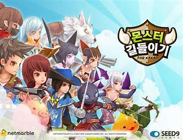

사람들이 관심이 점차 늘어나고 스마트폰의 사양이 굉장히 발달하였으며 "모바일 게임"시장의 규모가 거대해지기 시작하는데
이는 한국에서 게임이 점차 인정 받고 있었기 때문입니다.
한국에서의 게임 흥행의 첫 사례라고 볼 수 있는 스타크래프트의 등장과 더불어
리그오브레전드가 한국에서 연달아 흥행을 이루자 게임의 이미지가 좋아짐과 더불어 산업적 가치를 인정받게 되며
게임이라는 주제가 수면위로 떠오르게 되는것이 모바일 게임 산업 발달의 가장 큰 원인이라고 볼 수 있습니다.
이에 기세를 박차 2015년 쯤 부터 한국에서도 양질의 모바일 게임이 생산 되기 시작했고

스마트폰 사양 발달의 고점이 더더욱 높아지며 고사양 컴퓨터 게임이 모바일에 이식되거나
모바일 오리지널의 고사양/대용량 옵션을 가진 대형 게임이 나오게 되며 현재의 게임시장을 이루게 됩니다.